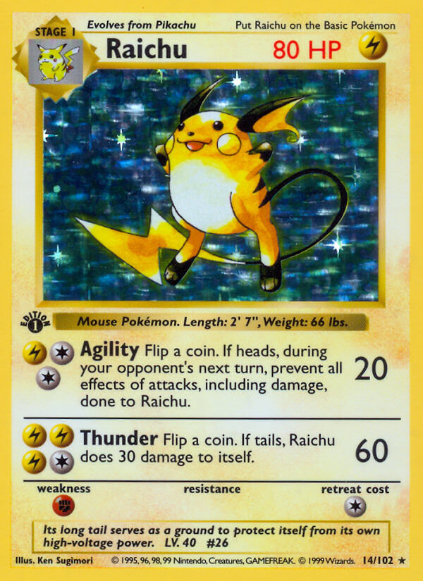
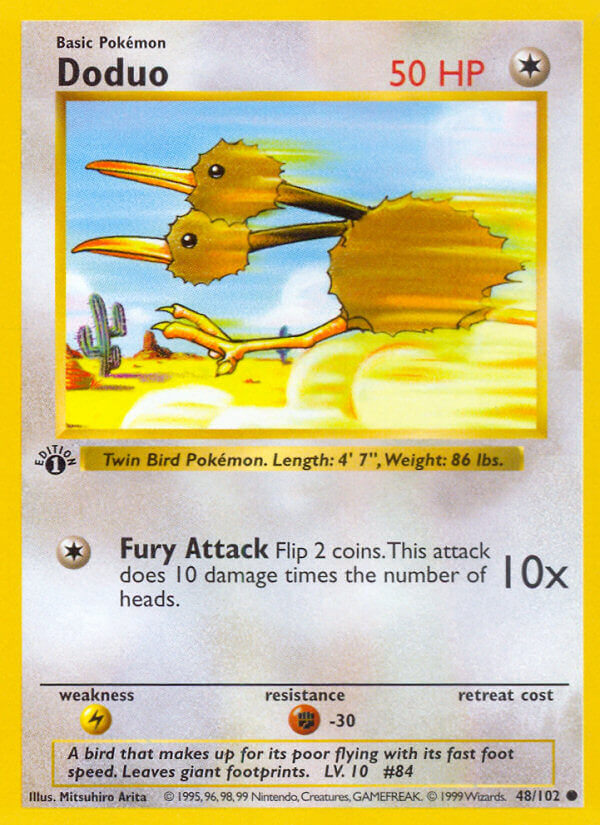
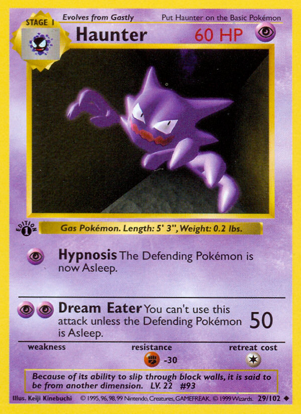
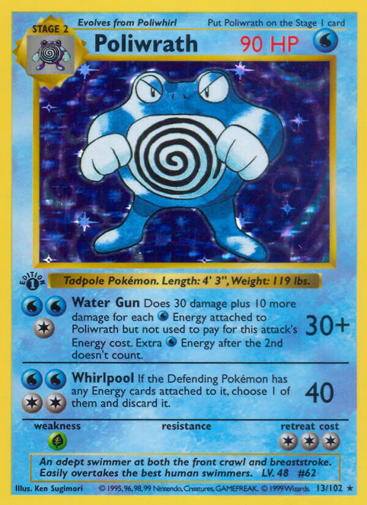
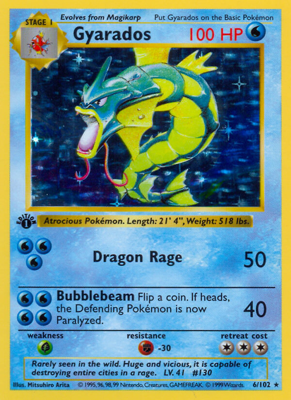

1. Gaz & Zehir Buharı
Perlin Gürültüsü (`feTurbulence`) ile Kaotik Girdaplar

HP 60
Türbülans Filtresi:
Teknoloji:
Native SVG + GSAP
2. Su Jeti Hidrodinamiği
Anizotropik Basınç Dalgası ve Kırılma (Caustics)

HP 100
Basınç Kırılması:
Teknoloji:
feDisplacementMap
3. Sıvı Yüzey Gerilimi & Boyunlaşma
Gooey Filtresi ile Damlaların Kaynaşması (Metaball)

HP 50
Metaball Yüzey Gerilimi:
Teknoloji:
feColorMatrix + Blur
4. Micro-Canvas Yüksek Yoğunluk
Tek Tag ile 250 Parçacık, Yerçekimi ve Sekme
HP 100
Parçacık Sayısı:
Teknoloji:
HTML5 2D Canvas
5. Navier-Stokes Akışkan Simülasyonu
Eulerian Grid ile Gerçek Girdaplı (Vorticity) Duman

HP 70
Miazma Püskürt:
Teknoloji:
CFD Fluid Solver (60 FPS)
6. Spring-Mass Hidrodinamik Yüzey
Yay-Kütle Ağı ile Fiziksel Dalga ve Çalkantı

HP 90
Suya Darbe İndir:
Teknoloji:
Hooke's Law + Bézier Spline
7. WebGL Sıvı Kırılması & Caustics
Saf GPU Fragment Shader ile Su Işık Kırılması

HP 100
Shader Parıltısı:
Teknoloji:
WebGL GLSL Shader